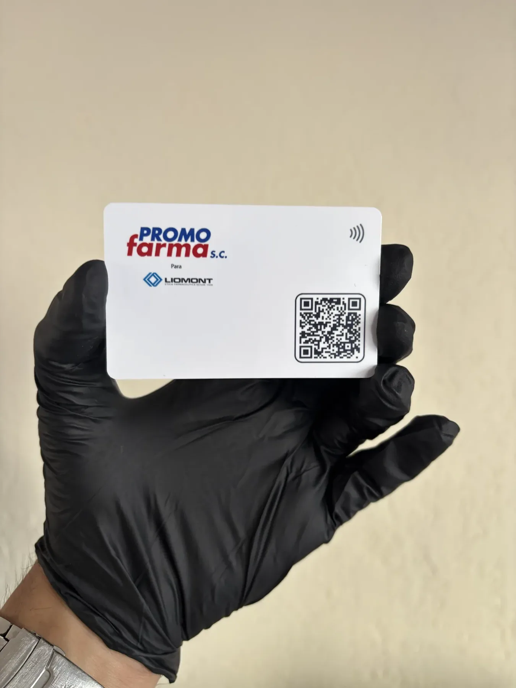
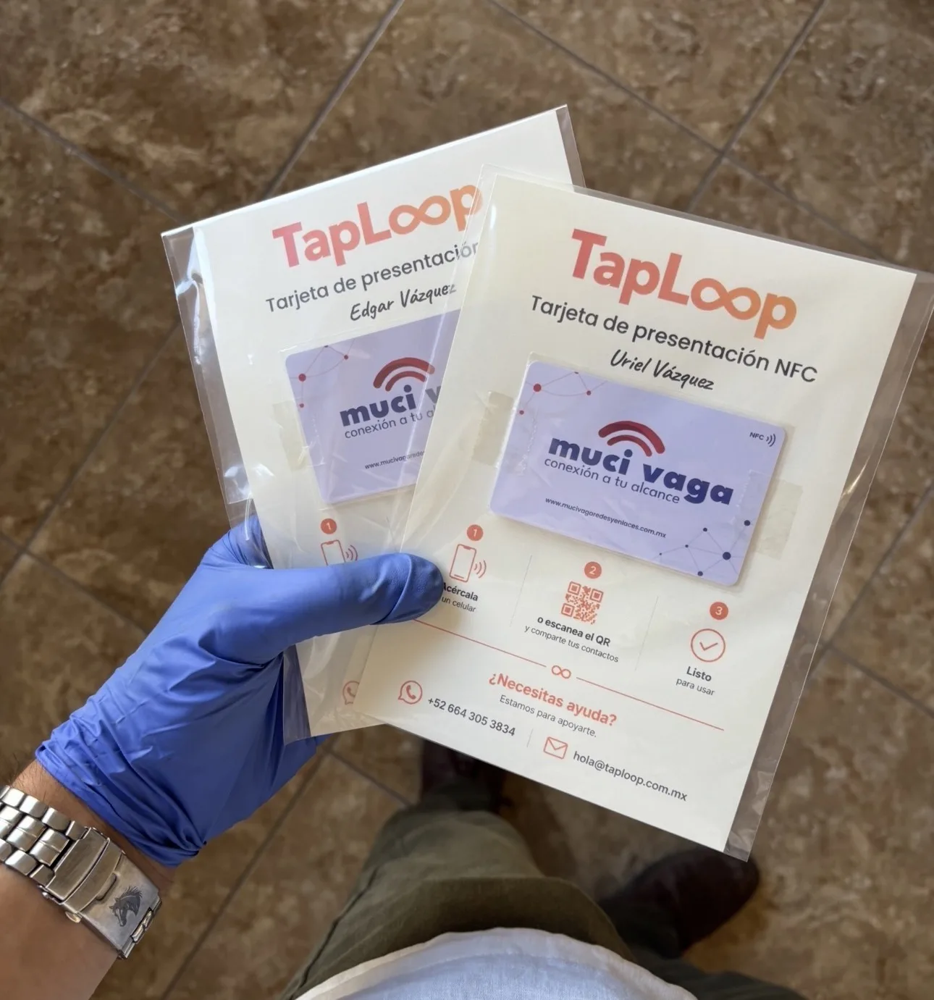
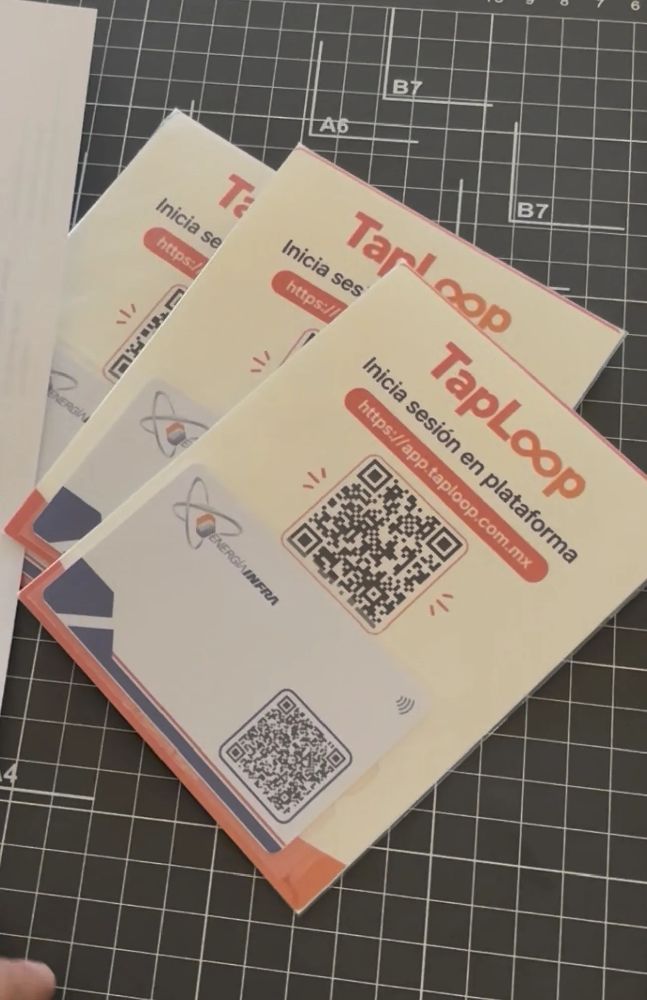
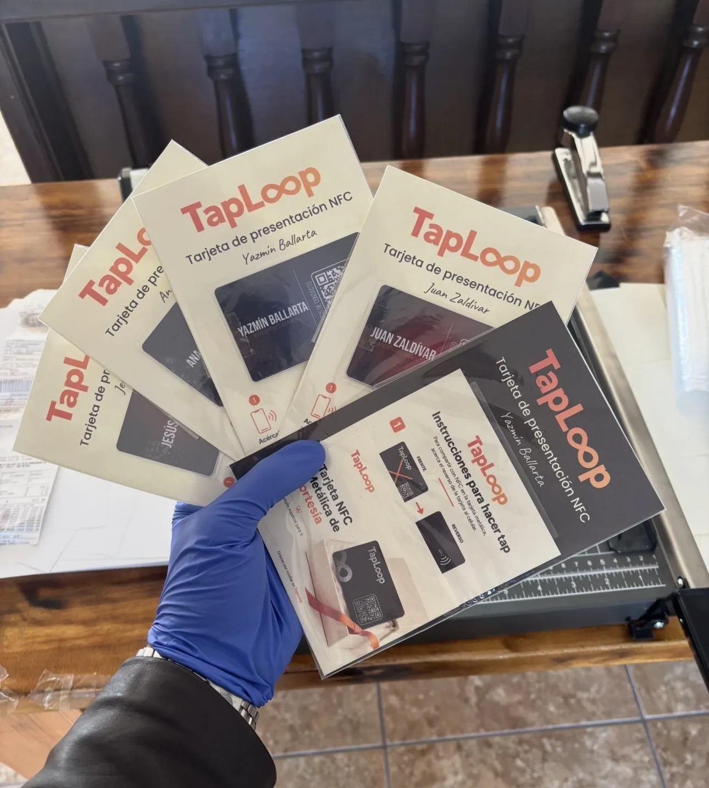

Recibe tu propuesta
Propuesta con diseño, cantidad y necesidades de tu equipo.
 Recibir una propuesta
Recibir una propuesta 
Tarjeta NFC PVC + perfil digital incluido
Comparte tu contacto, WhatsApp, redes y enlaces con un toque. Personalizada con tu marca y conectada a tu perfil digital TapLoop.
Cotización personalizadapara tarjeta PVC con perfil digital incluido.
Diseñada para conectar mejor. Una tarjeta física, un perfil siempre actualizado y una presentación profesional en cada interacción.
Envíos a todo México. Entrega estimada de 3-5 días hábiles después de aprobar diseño y producción.
Después de tu compra nos compartes tu logo, colores y datos. Preparamos una muestra digital antes de producir tus tarjetas.
Cómo funciona
Propuesta con diseño, cantidad y necesidades de tu equipo.
Recibir una propuesta Configuramos tarjeta y perfil digital por colaborador.

Fabricamos y enviamos todo listo en 3-5 días hábiles.

Comparte al instante y gestiona perfiles, métricas y leads.

Personalización para empresas
Creamos tarjetas NFC y perfiles digitales alineados con tu identidad visual, logo, colores y datos profesionales.


Cada interacción es una oportunidad para dejar una gran impresión.
Perfil digital TapLoop
Tu perfil y tus herramientas, siempre disponibles.
Cambia contacto, puesto y enlaces.
Todo en un mismo perfil.
La misma tarjeta abre la información actualizada.

Plataforma TapLoop
Edita tu perfil, consulta métricas y administra tus contactos desde TapLoop.

Consulta visitas, clics e interacciones para entender qué contactos muestran más interés.

Recibe datos de contacto, organiza oportunidades y da seguimiento desde la plataforma.

Administra perfiles, tarjetas y datos profesionales de cada colaborador desde un mismo lugar.
Una misma imagen de marca para todo tu equipo. Administra perfiles, tarjetas y datos profesionales desde un solo lugar.
Un perfil para cada integrante.
Logo, colores e información alineados con tu empresa.
Cambia puestos, teléfonos y enlaces sin reemplazar tarjetas.
Gestiona todo tu equipo desde un solo lugar.

Trabajos realizados
Una muestra de proyectos reales en PVC con diseño personalizado, QR y perfil digital activo.




Clientes y equipos
Profesionales y equipos ya utilizan TapLoop para compartir su información y mantener una presencia consistente.
Lo más importante antes de solicitar tu tarjeta NFC Digital.
Es una tarjeta física de PVC con tecnología NFC y código QR que abre un perfil digital personalizado con tus datos de contacto, WhatsApp, redes sociales, sitio web y enlaces importantes.
No. El perfil digital se abre directamente en el navegador de un teléfono compatible al acercar la tarjeta o escanear el código QR.
Sí. La tarjeta y el perfil digital se personalizan con tu logo, nombre, cargo, colores, datos de contacto y enlaces principales.
Sí. Según la solución contratada, puedes actualizar datos y enlaces del perfil digital sin reemplazar la tarjeta física.
Funciona en teléfonos compatibles con NFC. Además, el código QR permite abrir el mismo perfil digital desde la cámara del teléfono.
La entrega estimada es de 3-5 días hábiles después de aprobar diseño y producción. El plazo puede variar según la cantidad y el destino.
Cuéntanos qué diseño buscas y nuestro equipo preparará tu propuesta personalizada.